Készült Kiss Attila előadásai alapján.
Sárközi Gergő, 2022-23-1. félév
Nincsen lektorálva!
Napló (naplo.ppt)
144. Mit jelent a konzisztens állapot és mit jelent a konzisztens adatbázis? (2 pont)
4. oldal, 2 pontja.
Konzisztens állapot: összes feltétel (megszorítás) ki van elégítve
Konzisztens adatbázis: az adatbázis konzisztens állapotban van
145. Mit hívunk tranzakciónak és mi jellemző rá? (4 pont)
10. oldal, definíció a cím alatt, illetve az ábra alatti 4 sor.
Tranzakció: adatkezelő műveletek sorozata, amely sorozat a konzisztenciát megtartja.
Ha egy tranzakció konzisztens állapotból indul és a tranzakció csak egyedül fut le, akkor a tranzakció konzisztens állapotban hagyja az adatbázist.
146. Mit jelent a tranzakció atomossági tulajdonsága? (2 pont)
15. oldal, Atomosság bekezdése
Atomosság, atomicity: tranzakciókat vagy teljesen végrehajtuk, vagy egyáltalán nem.
147. Mit jelent a tranzakció konzisztencia tulajdonsága? (2 pont)
15. oldal, Konzisztencia bekezdése.
Konzisztencia, consistency: a tranzakció megőrzi az adatbázis konzisztenciáját, azaz a tranzakció végrahajtási után is teljesüljenek a megszorítások.
148. Mit jelent a tranzakció elkülönítési tulajdonsága? (2 pont)
15. oldal, Elkülönítés bekezdése.
Elkülönítés, isolation: minden tranzakció látszólag úgy fut le, mintha párhuzamosan nem futna vele együtt másik tranzakció.
149. Mit jelent a tranzakció tartóssági tulajdonsága? (2 pont)
15. oldal, Tartósság bekezdése.
Tartósság, durability: egy befejezett tranzakció hatása nem veszhet el (akkor se, ha a befejzés után egyből elmegy az áram).
150. A tranzakció-feldolgozónak milyen három feladata van? (3 pont)
17. oldal, első 3 pont.
- Naplózás
- Konkurenciavezérlés
- Holtpont feloldás
151. A tranzakciók melyik tulajdonságát biztosítja a naplózás? (1 pont)
17. oldal, naplózás alatti zöld mondat.
Tartósság, durability.
152. A tranzakciók melyik tulajdonságát biztosítja a konkurenciakezelés? (1 pont)
18. oldal, 1. kék mondat.
Elkülönítés, isolation.
153. Mi az ütemező feladata? (2 pont)
18. oldal, 2. pont, zöld mondat.
Összetett tranzakciók résztevékenységeinek egy olyan sorrendjét kell meghatároznia, amely biztosítja az elkülönítést (isolation-t). Azaz elemi tevékenységek olyan sorrendje kell, amely esetén az összhatás megegyezik azzal, mintha a tranzakciókat nem párhuzamosan, hanem egymás után hajtottuk volna végre.
154. Mitől sérülhet a konzisztencia? (4 pont)
21. oldal, 4 piros címszó.
- Tranzakcióhiba (hibásan megírt vagy rosszul ütemezett vagy félbehagyott tranzakció)
- Adatbázis-kezelési hiba (adatbázis-kezelő hibás: nem végzi helyesen a dolgát)
- Hardverhiba
- Adatmegosztásból származó hiba
155. A belső társérülés elleni védekezés milyen két lépésből áll? (4 pont)
35. oldal, 1. és 2. pont.
- Felkészülés a hibára: naplózás
- Hiba után helyreállítás: napló segítségével egy konzisztens állapot helyreállítása
156. Mit hívunk adatbáziselemnek? (2 pont)
36. oldal, 2. bekezdés mondata.
Adatbáziselem: fizikai adatbázisban tárolt adatok funkcionális egysége, amelyet tranzakciókkal lehet lekérdezni és módosítani.
157. A tranzakció és az adatbázis kölcsönhatásának milyen három fontos helyszíne van? (3 pont)
37. oldal, 1,2,3. pont.
- Adatbáziselemeket tartalmazó lemezblokkok
- Pufferkezelő által használt (virtuális vagy valós) memóriaterület
- Tranzakció memóriaterülete
159. Mit jelent a READ(X,t) művelet? (4 pont)
39. oldal, 2. pont.
Az \(X\) adatbáziselem bemásolása a tranzakció \(t\) változójába. Ha az \(X\) adatbáziselemet tartalmazó blokk nincs még a memóriapufferben, akkor előtte még az \(INPUT(X)\) végrehajtódik.
160. Mit jelent a WRITE(X,t) művelet? (4 pont)
39. oldal, 3. pont.
A tranzakció \(t\) változójának tartalma bemásolódik az \(X\) adatbáziselem memóriapufferbeli tartalmába. Ha az \(X\) adatbáziselemet tartalmazó blokk nincs még a memóriapufferben, akkor előtte még az \(INPUT(X)\) végrehajtódik.
161. Mit jelent az OUTPUT(X) művelet? (2 pont)
39. oldal, 4. pont.
Az \(X\) adatbáziselemet tartalmazó memóriapuffer kimásolása lemezre.
162. Adjuk meg az Undo naplózás U1 és U2 szabályát! (4 pont)
50. oldal teljesen.
U1: ha egy tranzakció módosít egy adatbáziselemet, akkor a <tranzakció, adatbáziselem, régi érték> naplóbejegyzést azelőtt kell a lemezre írni, mielőtt az új értéket.
U2: ha egy tranzakció hibamentesen befejeződött, akkor a <tranzakció, COMMIT> naplóbejegyzést csak azután szabad a lemezre írni, ha a tranzakció által módosoított összes adatbáziselem már a lemezre iródott, de ezután rögtön.
163. Adjunk meg egy példát Undo naplózás esetén a lemezre írás sorrendjére! (6 pont)
52. oldal teljesen, de lehet más példa is.
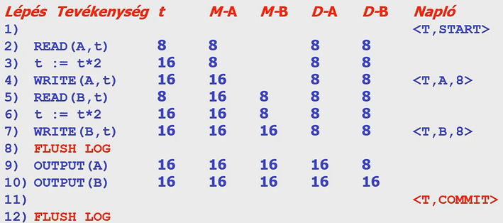
164. Adjuk meg Undo naplózás esetén a helyreállítás algoritmusát! (8 pont)
54. oldal teljesen.
- Azokkal a tranzakciókkal kell foglalkozni, amelyekhez van <Ti, start> a naplóban, de nincs se <Ti, commit>, se <Ti, abort>.
- Visszafelé haladva a naplón, egy ilyen tranzakcióhoz tartozó <Ti, X, v> naplóbejegyzés esetén ezeket kell csinálni: write(X,v), output(X).
- Végül minden ilyen tranzakciót abortálni kell: <Ti, abort>.
- Befejezésül írjuk ki a naplót a háttértárra.
165. Adjunk meg a működés közbeni ellenőrzőpont képzésének lépéseit Undo naplózás esetén! (6 pont)
65. oldal, a módszer lépései
- <START CKPT(T1,…,Tk)> ahol T1,…,Tk az aktív tranzakciók (majd flush log)
- Meg kell várni, amíg T1,…,Tk mind befejeződik (normálisan vagy abnormálisan). Közben újabb tranzakciók indulhatnak.
- Végezetül <END CKPT> és flush log
166. Ha UNDO naplózás utáni helyreállításkor előbb <END CKPT> naplóbejegyzéssel találkozunk, akkor meddig kell visszamenni a napló olvasásában? (2 pont)
68. oldal
A legközelebbi korábbi <START CKPT(T1,…,Tk)> naplóbejegyzésig.
167. Ha UNDO naplózás utáni helyreállításkor előbb <START CKPT(T1,…,Tk)> naplóbejegyzéssel találkozunk, akkor meddig kell visszamenni a napló olvasásában? (2 pont)
69. oldal, 2. pont és első alpontja.
A T1,…,Tk tranzakciók nem lettek befejezve, így ezek közül a legkorábban indított indulásáig kell visszamenni a naplóban.
168. Adjuk meg a REDO naplózás esetén a lemezre írás sorrendjét 5 lépésben! (5 pont)
75. oldal, teljesen.
- ha a T tranzakció v-re módosítja egy X adatbáziselem értékét: <T,X,v> naplóba írása
- flush log
- COMMIT naplóba és lemezre írása
- adatbáziselemek értékeinek cseréje a lemezen
- <T,end> naplóba és lemezre írása
169. Adjuk meg a REDO naplózás esetén az R1 szabályt! (2 pont)
74. oldal.
R1: mielőtt bármely X adatbáziselemet a lemezen módosítanánk, az összes <T,X,v> és a <T,COMMIT> naplóbejegyzéseknek a lemezre kell kerülnie.
170. Adjunk meg egy példát REDO naplózás esetén a lemezre írás sorrendjére! (6 pont)
76. oldal teljesen, de lehet más példa is.
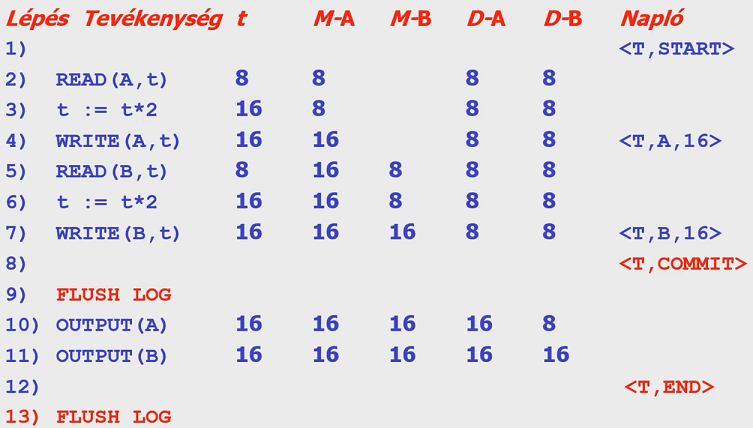
171. Adjunk meg REDO naplózás esetén a helyreállítás algoritmusát! (8 pont)
78. oldal teljesen.
- Azokkal a tranzakciókkal kell foglalkozni, amelyekhez van <Ti,COMMIT>, de nincs <Ti, end> a naplóban.
- Előrefelé haladva a naplóban, egy ilyen tranzakcióhoz tartozó <Ti,X,v> naplóbejegyzés esetén ezeket kell csinálni: write(X,v), output(X).
- Végül minden ilyen tranzakciót be kell fejezni: <Ti,END>.
172. Mi jellemző a módosított REDO naplózásra? (8 pont)
79. oldal, első bekezdés 3 sora.
Befejezett tranzakciók <Ti,END>-del való jelölése helyett a be nem fejezettek vannak megjelölve <Ti,ABORT>-tal.
173. Fogalmazzunk meg 3 különbséget az UNDO és REDO naplózás esetén! (3 pont)
83. oldal, utolsó 3 pontja.
- Az adat változás utáni (és nem előtti) értéket jegyezzük fel a naplóba
- A kiírás elé rakjuk a COMMIT-ot, így megtelhet a puffer
- REDO esetén el lehet halasztani az írást (UNDO esetleg túl gyakran akarhat írni)
174. Mit hívunk piszkos puffereknek? (1 pont)
84. oldal, utolsó pontja (értelemszerűen)
Végrehajtott, de lemezre még ki nem írt módosítások vannak benne.
175. Adjuk meg a működés közbeni ellenőrzőpont képzésének lépéseit REDO naplózás esetén! (6 pont)
85. oldal, a módszer 3 lépése
- <START CKPT(T1,…,Tk)> ahol T1,…,Tk az aktív tranzakciók (majd flush log)
- Az összes <START CKPT> előtt befejeződött tranzakciók által írt adatbáziselemet a lemezre kell írni
- Végezetül <END CKPT> és flush log
176. Adjuk meg az UNDO/REDO naplózás esetén az UR1 szabályt! (2 pont)
94. oldal.
UR1: <T,X,v,w> naplóbejegyzésnek lemezre kell kerülnie, mielőtt az X adatbáziselem a lemezen módosul
177. Adjuk meg az UNDO/REDO naplózás esetén a WAL elvet! (2 pont)
94. oldal.
Write After Log elv: előbb naplózunk, utána módosítunk
178. Hová kerülhet a COMMIT az UNDO/REDO naplózás esetén? (2 pont)
94. oldal, 4. pont.
A <T, COMMIT> bejegyzés meg is előzheti és követheti is az adatbáziselemek lemezen történő bármilyen megváltozását.
179. Adjunk meg egy példát UNDO/REDO naplózás esetén a lemezre írás sorrendjére! (6 pont)
95. oldal teljesen, de lehet más példa is.
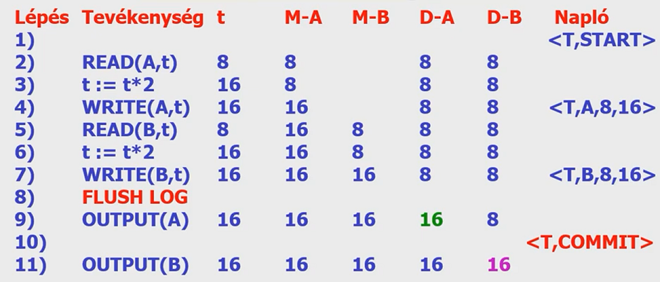
Megjegyzés: a <T,COMMIT> naplóbejegyzés kerülhetett volna 9 elé vagy 11 után is
180. Mi az UNDO/REDO naplózás esetén a helyreállítás 2 alapelve? (4 pont)
96. oldal 1,2 pontok.
- REDO: legkorábbitól kezdve allítsuk helyre minden befejezett tranzakció hatását
- UNDO: legutolsótól kezdve tegyük semmissé minden be nem fejezett tranzakció tevékenységét
181. Mi lehet probléma az UNDO/REDO naplózás esetén? (2 pont)
100. oldal, első pont.
<T, COMMIT> naplóbejegyzés lemezre írása előtt fellépő hiba utáni helyreállítás során a rendszer a felhasználó számára befejezettnek tűnő tranzakció hatásait semmissé teszi ahelyett, hogy helyreállította volna őket
182. Adjuk meg az UR2 szabályt az UNDO/REDO naplózás esetén? (2 pont)
100. oldal, 3. pont.
UR2: a <T,COMMIT> bejegyzést a naplóba kerülés után egyből a lemezre kell írni
183. Adjunk meg a működés közbeni ellenőrzőpont képzésének lépéseit UNDO/REDO naplózás esetén! (6 pont)
102. oldal, a módszer 3 lépése
- <START CKPT(T1,…,Tk)> ahol T1,…,Tk az aktív tranzakciók (majd flush log)
- Össses piszkos puffer (módosított adatbáziselem(ek)et tartalmazó pufferek) lemezre írása
- Végezetül <END CKPT> és flush log
184. Adjunk meg a működés közbeni mentés 5 lépését! (5 pont)
116. oldal, a módszer 5 lépése
- <START DUMP> naplóba írása
- Naplózási módnak megfelelő ellenőrzőpont készítése
- Adatlemezek teljes vagy növekményes mentése
- Napló mentése, ami tartalmazza legalább a második pontban készített ellenőrzőponthoz tartozó naplóbejegyzéseket
- <END DUMP> naplóba írása
185. Az Oracle milyen naplózást valósít meg? (2 pont)
123. oldal, 1. pont
UNDO és REDO naplózás speciális keverékét.
186. Az Oracle mit használ UNDO naplózás céljára? (3 pont)
123. oldal, 2. pont, mindhárom mondata
Egy vagy több rollback szegmenst, amelyek a tranzakciók által módosíott adatok régi értékeit tárolják attól függetlenül, hogy a lemezre íródtak-e már a módosítások.
Rollback szegmensek segítségével van az olvasási konzisztencia, tranzakciók visszagörgetése és az adatbázis helyreállítása megvalósítva.
187. Az Oracle mit használ REDO naplózás céljára? (2 pont)
119. oldal, 2. pont
Online és archivált naplót.
188. Mit tartalmaz az Oracle rollback szegmense? (4 pont)
123. oldal, 3. pont, mind a négy mondata
- Egy rollback szegmens rollback bejegyzésekből áll
- Egy rollback bejegyzés tartalmazza a megváltozott blokk azonosítóját és a blokk régi értékét
- Egy rollback bejegyzés előbb kerül a rollback szegmensbe, mint ahogy megtörténik a módosítás
- Azonos tranzakcióhoz tartozó bejegyzések láncolva vannak gyors keresés érdekében
Konkurencia (konkurencia.ppt)
189. Milyen problémát kell megoldania a konkurrencia-vezérlésnek? (4 pont)
2. oldal, alsó 3 zöld sor
Tranzakciók hathatnak egymásra, ami miatt az adatbázis inkonzisztenssé válhatnak, akkor is, ha rendszerhiba nem történik és a tranzakciók külön-külön megőriznék a konzisztenciát.
190. Mit hívunk ütemezőnek? (2 pont)
3. oldal, 1. pont
Tranzakciós lépések szabályozását végző része az adatbázis-kezelő rendszernek.
191. Mit hívunk ütemezésnek? (2 pont)
3. oldal, 5. pont
Egy vagy több tranzakció által végrehajtott lényeges műveletek időrendben vett sorozata. Egy adott tranzakcióhoz tartozó műveletek sorrendje megegyezik a tranzakcióban megadott sorrenddel.
192. Milyen 2 módon biztosítja az ütemező a sorbarendezhetőséget? (2 pont)
4. oldal, 1. bekeretezett rész.
- Várakoztat
- Abortot rendel el
193. Mit hívunk konfliktuspárnak? (2 pont)
11. oldal, 3. pont
Egymást követő műveletpár az ütemezésben, melyek sorrendjének a felcserélése legalább az egyik tranzakció viselkedésének megváltozásával jár.
194. Milyen 3 esetben nem cserélhetjük fel a műveletek sorrendjét, mert inkonzisztenciát okozhatna? (3 pont)
13. oldal, a 3 piros sor. (A sorszámozás nyilván a),b),c) akart lenni.)
- \(r_i(X); \; w_i(Y)\)
- \(w_i(X); \; w_j(X)\)
- \(r_i(X); \; w_j(X)\)
195. Mikor konfliktus-ekvivalens 2 ütemezés? (2 pont)
14. oldal, 2. pont
Ha szomszédos műveletek konfliktusmentes cseréinek sorozatával az egyiket a másikká alakíthatjuk.
196. Mikor konfliktus-sorbarendezhető egy ütemezés? (2 pont)
14. oldal, 3. pont
Ha konfliktusekvivalens valamely soros ütemezéssel.
197. Mi a konfliktus-sorbarendezhetőség elve? (3 pont)
14. oldal, 1. pont, teljesen
Konfliktusmentes cserékkel megpróbáljuk az ütemezést soros ütemezéssé alakítani. Ha ez sikerül, akkor az ütemezés sorbarendezhető volt, mivel az adatbázisra való hatása ekvivalens marad.
198. Mi a kapcsolat a sorbarendezhetőség és a konfliktus-sorbarendezhetőség között? (2 pont)
14. oldal, 3, 4. pont röviden
A konfliktus-sorbarendezhetőség elégséges (de nem szükséges) feltétele a sorbarendezhetőségnek.
199. Az \(r_1(A)\); \(w_1(A)\); \(r_2(A)\); \(w_2(A)\); \(r_1(B)\); \(w_1(B)\); \(r_2(B)\); \(w_2(B)\); ütemezést alakítsuk soros ütemezéssé (5 pont)
15. oldal, az átalakítás 5 sora
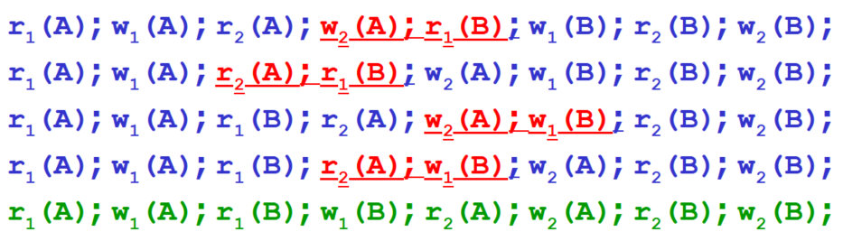
200. Adjunk példát sorbarendezhető, de nem konfliktus-sorbarendezhető ütemezésre (4 pont)
17. oldal S2 példája, mert hatása megegyezik a soros S1-gyel (Si-ket részletezni!)
- Legyen \(S\): \(w_1(Y); \; w_2(Y); \; w_2(X); \; w_1(X); \; w_3(X);\)
- Ekkor \(S\) sorbarendezhető, de nem konfliktusmentes-sorbarendezhető ütemezés
- Sorbarendezhető, mert \(w_1(X)\) és \(w_2(X)\)-től függetlenül \(w_3(X)\) felül fogja írni az értéket, tehát az eredmény azonos lesz.
- Nem konfliktusmentes-sorbarendezhető, mert konfliktusmentes cserékkel nem tudjuk sorba rendezni.
201. Mi a konfliktus-sorbarendezhetőség tesztelésének alapötlete? (2 pont)
18. oldal, 1. pont
Ha konfliktusban álló műveletek szerepelnek egy ütemezésben, akkor a konfliktus-ekvivalens soros ütemezésben a műveletekkel azonos sorrendben kell a műveleteket tartalmazó tranzakcióknak előfordulniuk.
202. Mikor mondjuk, hogy egy S ütemezés alapján \(T_1\) megelőzi \(T_2\)-t? (5 pont)
19. oldal, 1. pont a feltétel 1,2,3 pontjaival együtt.
Ha van a \(T_1\)-ben olyan \(A_1\) művelet és a \(T_2\)-ben olyan \(A_2\) művelet, hogy:
- \(A_1\) megelőzi \(A_2\)-t \(S\)-ben, és
- \(A_1\) és \(A_2\) ugyanarra az adatbáziselemre vonatkoznak, és
- \(A_1\) és \(A_2\) közül legalább az egyik írás művelet
203. Adjuk meg egy S ütemezéshez tartozó megelőzési gráf definícióját! (5 pont)
19. oldal, utolsó pont, teljesen.
Csúcsok az \(S\) ütemezés tranzakciói, ahol a \(T_i\) tranzakcióhoz tartozó csúcsot \(i\)-vel jelöljük. Az \(i\) csúcsból a \(j\) csúcsba akkor vezet irányított él, ha \(T_i <_s T_j\).
204. Milyen kapcsolat van a konfliktus-ekvivalencia és a megelőzési gráfok között? (4 pont)
20. oldal, lemma és 21. oldal megjegyzése
\(S_1\) és \(S_2\) konfliktusekvivalens \(\implies\) \(S_1\) és \(S_2\) megelőzési gráfja megegyezik (fordított irányban az implikáció nem áll fent)
205. Adjunk példát arra, hogy két ütemezés megelőzési gráfja megegyezik, de nem konfliktus-ekvivalensek! (4 pont)
21. oldal ellenpéldája
\(S_1 \;=\; w_1(A); \; r_2(A); \; w_2(B); \; r_1(B)\)
\(S_2 \;=\; r_2(A); \; w_1(A); \; r_1(B); \; w_2(B)\)
A gráfon \(1\) és \(2\) egymásba mutat (egy kör).
206. Mit hívunk egy irányított, körmentes gráf esetében a csúcsok topologikus sorrendjének? (4 pont)
23. oldal, 1. pont
Csúcsok egy olyan rendezését, amelyben minden \(a \to b\) élre az \(a\) csúcs megelőzi a \(b\) csúcsot a topologikus rendezésben
207. Hogyan lehet tesztelni a megelőzési gráf alapján egy ütemezés konfliktus-sorbarendezhetőségét? (4 pont)
22. oldal, TESZT
- Ha egy megelőzési gráf tartalmaz irányított kört, akkor az ütemezés nem konfliktus-sorbarendezhető
- Ha nem tartalmaz, akkor konfliktus-sorbarendezhető és bármely topologikus sorrend megadja a konfliktus-ekvivalens soros sorrendet
208. Mi jellemző a passzív ütemezésre? (4 pont)
28. oldal
- Hagyjuk a rendszert működni
- Ütemezésnek megfelelő gráfot tároljuk
- Időnként megnézzük, hogy van-e benne kör
- Ha nincs, akkor jó volt az ütemezés
209. Mi jellemző az aktív ütemezésre és milyen 3 módszert lehet erre használni? (5 pont)
29. oldal és a 30. oldal 1,2,3 pontja
Aktív ütemezés: az ütemező megakadályozza a kör kialakulását az alábbi módszerek egyikével:
- zárak
- időbélyegek
- érvényesítés
210. Mit hívunk a tranzakciók konzisztenciájának zárolási ütemező esetén? (2 pont)
32. oldal 1,2 pont középen
- Tranzakció csak akkor olvashat/írhat egy elemet, ha azt már korábban zárolta és még nem oldotta fel
- Ha egy tranzakció zárol egy elemet, akkor később azt fel kell oldania.
211. Mit hívunk a zárolási ütemező jogszerűségének? (1 pont)
32. oldal 1. pont alul
Két tranzakció egyidejűleg nem zárolhatja ugyan azt az elemet. Előbb az egyiknek fel kell oldani a zárat.
212. Adjunk példát konzisztens tranzakciók jogszerű ütemezésére, ami mégsem sorbarendezhető! (6 pont)
36. oldal teljesen, de lehet más is.
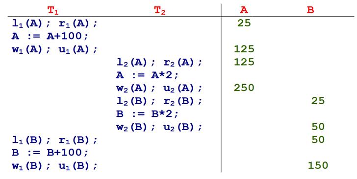
213. Mit hívunk kétfázisú zárolásnak és szemléltessük rajzban is? (2 pont)
39. oldal rajzzal együtt.
Tranzakciókban minden zárolási művelet megelőzi az összes zárfeloldási műveletet.
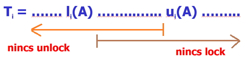
214. Adjunk a tranzakciókra 2, az ütemezésre 1 feltételt, ami elegendő a konfliktus-sorbarendezhetőség bizonyítására! Milyen módon bizonyítható a tétel? (5 pont)
42. oldal a tétel kimondása pontosan, és a bizonyításnál szereplő mondat.
Tétel: konzisztens, kétfázisú zárolású tranzakciók bármely jogszerű ütemezését át lehet alakítani konfliktusekvivalens soros ütemezéssé
Bizonyítás: indukcióval, az ütemezésben részt vevő tranzakciók száma mentén
215. Mi a várakozási gráf és hogyan segít a holtpont felismerésében? (4 pont)
47. oldal 1. pont és 48. oldal tételének pontos kimondása.
Várakozási gráf: csúcsai a tranzakciók és \(T_i\)-ből \(T_j\)-be pontosan akkor vezet él, ha \(T_i\) vár egy olyan zár elengedésére, amit \(T_j\) tart éppen
Tétel: ütemezés során egy adott pillanatban pontosan akkor nincs holtpont, ha az adott pillanathoz tartozó várakozási gráfban nincs irányított kör
216. Milyen két lehetőséggel védekezhetünk a holtpont ellen? (4 pont)
49. oldal a) és b) pontok kék mondatai pontosan.
- Tranzakciók az összes szükséget zárat előre elkérik, és ha nem kapják meg az összeset, akkor egyet se kérnek inkább és el sem indulnak
- Tranzakciók az adategységekhez tartozó zárakat az adategységek növekvő sorrendjében kérik el (feltesszük, hogy az adategységekre van valamilyen sorrend); így lehet várakozás, de holtpont nem
217. Mi a kiéheztetés problémája és milyen megoldás van rá? (2 pont)
50. oldal teljesen.
Kiéheztetés: többen várnak egy adott zárra és egy adott tranzakció sokáig nem kapja meg a zárat: helyette mindig egy másik tranzakció kapja meg
Megoldás: mindig a legrégebb óta várakozó tranzakció kapja meg a zárolás lehetőségét (adategységenként egy FIFO sorban kell tartani a várakozókat)
218. Osztott és kizárólagos zárak esetén mit hívunk a tranzakció konzisztenciájának? (2 pont)
56. oldal 1. pont és az utolsó mondat alul.
- Nem lehet írni kizárólagos zár fenntartása nélkül
- Nem lehet olvasni valamilyen zár fenntartása nélkül
- Minden zárolást fel kell oldani
219. Osztott és kizárólagos zárak esetén mit hívunk az ütemezés jogszerűségének? (2 pont)
58. oldal 1. bekezdés.
Egy elemet vagy egyetlen tranzakció zárolja kizárólagosan, vagy több is zárolhatja osztottan, de a kettő egyszerre nem lehet.
220. Osztott és kizárólagos zárak esetén adjunk meg feltételeket az ütemezés konfliktus-sorbarendezhetőségére? (4 pont)
61. oldal tételének pontos kimondása
Tétel: konzisztens 2PL tranzakciók jogszerű ütemezése konfliktus-sorbarendezhető
221. Osztott és kizárólagos zárak esetén adjuk meg a kompatibilitási mátrixot! (4 pont)
62. oldal utolsó pont, a zöld, kék, piros szövegekkel együtt
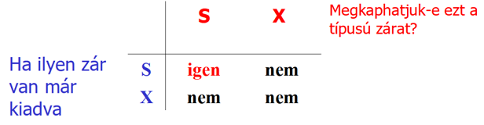
222. Többmódú zárak kompatibilitási mátrixa segítségével hogyan definiáljuk a megelőzési gráfot? (5 pont)
63. oldal 3 pont, két kék mondata pontosan
- Megelőzési gráf csúcsai a tranzakciók
- Pontosan akkor van él \(T_i\)-ből \(T_j\)-be, ha van olyan \(A\) adategység, amelyre az ütemezés során \(T_i\) a \(Z_k\) zárat megkapta és elengedte, majd ezután \(A\)-ra legközelebb \(T_j\) kapott olyan \(Z_l\) zárat, hogy a mátrixban a \(Z_k\) sor \(Z_l\) oszlopában “nem” áll
223. Többmódú zárak esetén a megelőzési gráf segítségével hogy lehet eldönteni a sorbarendezhetőséget? (3 pont)
64. oldal tétele pontosan kimondva
Tétel: csak zárkéréseket és zárelengedéseket tartalmazó jogszerű ütemezés sorbarendezhető pontosan akkor, ha a kompatibilitási mátrix alapján felrajzolt megelőzési gráf körmentes
224. Adjunk példát arra, hogy egy zárolási ütemező elutasít sorbarendezhető ütemezést? (4 pont)
65. oldal példája, valamint a kék mondata, a megelőzési gráf felrajzolása és „mivel tartalmaz irányított kört a megelőzési gráf, ezért elvetné az ütemező”.
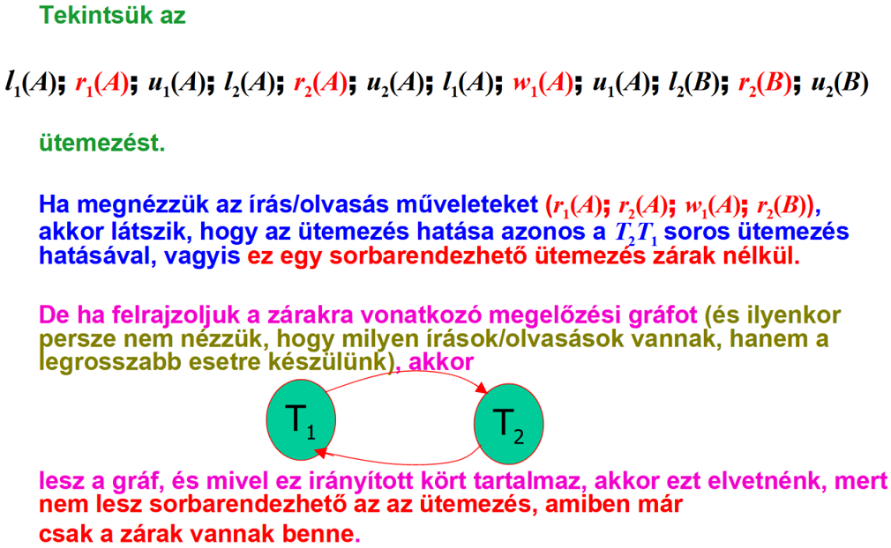
225. Adjunk feltételt az ütemezés sorbarendezhetőségére tetszőleges zármodellben! (4 pont)
66. oldal tétele pontosan kimondva.
Tétel: ha valamilyen zármodellben egy jogszerű ütemezésben minden tranzakció követi a 2PL-t, akkor az ütemezés sorbarendezhető (a megelőzési gráf nem tartalmaz kört).
226. Mikor mondjuk, hogy egyik zár erősebb a másiknál? (4 pont)
67. oldal első pont.
\(L_2\) erősebb \(L_1\)-nél, ha a kompatibilitási mátrix \(L_2\) sorában/oszlopában minden pozícióban “nem” áll, ahol \(L_1\) sorában/oszlopában is “nem” áll.
227. Adjuk meg a módosítási zár kompatibilitási mátrixát és értelmezzük röviden! (4 pont)
70. oldal a mátrix és az alatta lévő mondat.
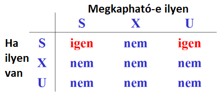
A módosítási zár…
- amikor kérjük, akkor osztott zárnak néz ki
- amikor már megvan, akkor kizárolagos zárnak néz ki
228. Mi az \(inc_i(X)\) művelet és adjuk meg a növelési zár kompatibilitási mátrixát! (4 pont)
72. oldal 4. pont és 73. oldalon a mátrix.
A \(T_i\) tranzakció megnöveli az \(X\) adatbáziselemet valamilyen konstanssal.
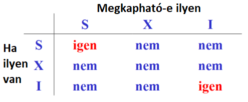
230. A zárfeloldások sorrendje milyen elvek alapján történhet? (3 pont)
88. oldal 3 zöld elnevezés.
- Első beérkezett első kiszolgálása (first come, first served)
- Elsőbbségadás az osztott záraknak (priority to shared locks)
- Elsőbbségadás a felminősítésnek (priority to upgrading)
231. Hierarchikus adatok esetén mi a figyelmeztető zárak használatának három alapelve? (3 pont)
93. oldal 3 pontja.
- Gyökérből indulva az alapelemig a kért zárnak megfelelő figyelmeztető zárakat kerünk
- Addig nem megyünk lejjebb a fában, amíg a figyelmeztető zárat meg nem kapjuk
- Konfliktusos helyzetek alsóbb szintre kerülnek a fában
232. Hierarchikus adatok esetén adjuk meg az osztott, kizárólagos és figyelmeztető zárakra vonatkozó kompatibilitási mátrixot? (4 pont)
97. oldal mátrixa felül, feliratokkal.
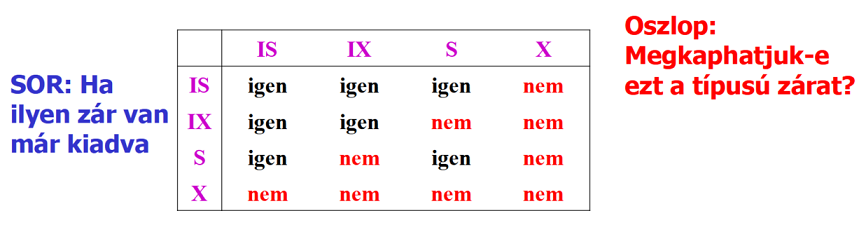
233. Hierarchikus adatok esetén miért vezetjük be az SIX zártípust és mi jellemző rá? (4 pont)
100. oldal 2. és 3. pont.
Azért vezetjük be, mert \(IS<IX\) és \(S<X\), de \(IX\) és \(S\) nem összehasonlítható.
\(SIX\) zár jelentése: egy tranzakció \(S\) és \(IX\) zárat is tett egy adatelemre. Ekkor \(SIX\) erősebb \(S\)-nél és \(IX\)-nél is, de ő a legegyengébb, akire ez igaz.
234. Adjuk meg a csoportos móddal kiegészített figyelmeztető zárakra vonatkozó kompatibilitási mátrixot! (5 pont)
102. oldal mátrixa, T igen, F nem.
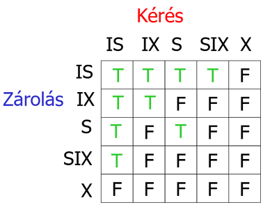
235. Mit hívunk nem ismételhető olvasásnak és mi a probléma vele? (4 pont)
108. oldal első 4 pontja.
- Egy tranzakció egy lekérdezést kétszer végrehajt, a kettő között szünettel.
- A két végrehajtás között egy másik tranzakció módosít vagy töröl a lekérdezett táblából néhány sort.
- Az első tranzakció lekérdezését ilyenkor nem ismételhető olvasásnak nevezzük.
- A probléma az, hogy ugyan annak a lekérdezésnek más lett az eredménye a másodszori végrehajtásban.
236. Mit hívunk fantom soroknak? (3 pont)
109. oldal teljesen.
- Egy tranzakció egy lekérdezést kétszer végrehajt, a kettő között szünettel.
- A két végrehajtás között egy másik tranzakció beszúr a lekérdezett táblába néhány sort.
- Az első tranzakció második lekérdezése mást eredményt fog adni, mint az első lekérdezés.
- A megjelent többlet sorokat fantom soroknak nevezzük.
237. Mikor követi egy tranzakció a faprotokollt? Adjuk meg a faprotokoll 4 szabályát! (4 pont)
121. oldal tétel fölötti kék rész teljesen.
- Első zárat bárhova elhelyezheti
- Későbbiekben csak akkor kaphat zárat \(A\)-n, ha van zárja \(A\) szülőjén
- Zárat bármikor feloldhatja
- Nem lehet újrazárolni: ha egy zár el lett engedve, akkor az nem kérhető megint
238. Hierarchiák, például B*-fa elemeinek zárolása esetén milyen feltétel adható az ütemezés sorbarendezhetőségére? (4 pont)
121. oldal tétel pontosan kimondva (az is kell, hogy jogszerű az ütemezés!).
Tétel: egy ütemezés sorbarendezhető, ha jogszerű és minden tranzakciója követi a faprotokollt
239. Mi az időbélyegzési módszer lényege? Használunk-e ilyenkor zárakat? (4 pont)
131. oldal Időbélyegzés két alpontja pontosan. Nem használunk zárakat.
- Minden tranzakcióhoz egy időbélyegzőt rendelünk
- Minden adatbáziselem utolsó olvasását és írását végző tranzakció időbélyegzőjét elmentjük, és összehasonlítjuk ezen értékeket, hogy a tranzakciók időbélyegzőinek megfelelő soros ütemezés ekvivalens legyen a tranzakciók aktuális ütemezésével
- Nem használunk zárakat
240. Adjunk meg három jellemzőt az Oracle konkurenciavezérlésére vonatkozóan! (3 pont)
174. oldal utolsó pontja.
- kétfázisú zárolás
- figyelmeztető protokoll
- többváltozatú időbélyegzők
241. Milyen olvasási konzisztenciát biztosít az Oracle és mivel éri ezt el? (3 pont)
175. oldal piros elnevezések és 176. oldal 1. pontja.
- Utasítás szintű olvasási konzisztencia: egy lekérdezés sohasem olvas piszkos adatot
- Tranzakció szintű olvasási konzisztencia: tranzakció összes lekérdezése a tranzakció indulásakor fennálló adatbázis állapotot látja
- Ezek eléréséhez a rollback szegmensekben tárolt adatokat használja
242. Adjuk meg az SQL92 ANSI/ISO szabványbanszereplő tranzakciós elkülönítési szinteket! (4 pont)
179. oldal táblázat első oszlopa.
- Read uncommitted (nem olvasásbiztos)
- Read committed (olvasásbiztos)
- Repeatable read (megismételhető olvasás)
- Serializable (sorbarendezhető)
243. Mi jellemező a nem olvasásbiztos elkülönítési szintre a piszkos, fantom, nem ismételhető olvasásokra vonatkozóan? (3 pont)
179. oldal táblázat első sora.
Ezek mind lehetségesek: piszkos olvasás, nem ismételhető olvasás, fantom olvasás
244. Mi jellemző az olvasásbiztos elkülönítési szintre a piszkos, fantom, nem ismételhető olvasásokra vonatkozóan? (3 pont)
179. oldal táblázat második sora.
Lehetséges: nem ismételhető olvasás, fantom olvasás
Nem lehetséges: piszkos olvasás
245. Mi jellemző a megismételhető olvasás elkülönítési szintre a piszkos, fantom, nem ismételhető olvasásokra vonatkozóan? (3 pont)
179. oldal táblázat harmadik sora.
Lehetséges: fantom olvasás
Nem lehetséges: piszkos olvasás, nem ismételhető olvasás
246. Mi jellemző a sorbarendezhető elkülönítési szintre a piszkos, fantom, nem ismételhető olvasásokra vonatkozóan? (3 pont)
179. oldal táblázat negyedik sora.
Ezek mind nem lehetségesek: piszkos olvasás, nem ismételhető olvasás, fantom olvasás
247. Milyen DML szintű zárakat használ az Oracle? (2 pont)
185. oldal középső pont két alpontjával.
Sor szintű és teljes tábla szintű.
248. Milyen zártípusokat használ az Oracle sorokra és táblákra? (6 pont)
185. oldal utolsó pont és 187. oldal utolsó előtti pont 5 alpontja.
Sorok szintén csak kizárólagos (írási) zár létezik
Táblák szintén ötféle zártípus van; ezek egyre erősebb sorrendben az alábbiak:
- row share (RS) vagy subshare (SS),
- row exclusive (RX) vagy subexclusive (SX),
- share (S),
- share row exclusive (SRX) vagy share-subexclusive (SSX)
- exclusive (X)